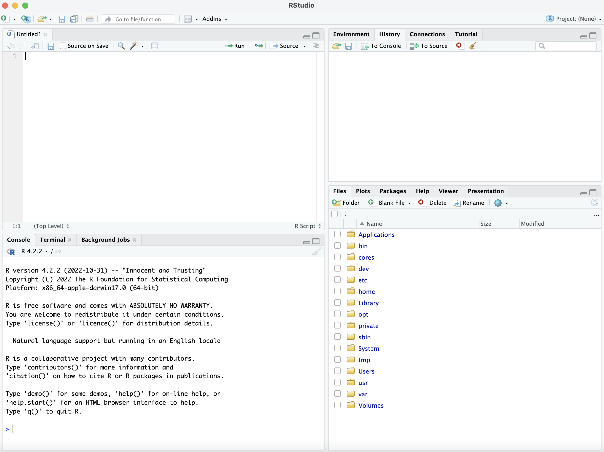

This workshop serves as a gentle introduction to programming with R. We will cover the basics of R, such as using the command line as a calculator, working with variables, simple data structures, and data types. We will show how to load data sets into R, and how to summarize data with statistics and plots.
| Operator | Description | Example |
|---|---|---|
+ |
addition | 3 + 4 = 7 |
- |
subtraction | 10 - 2 = 8 |
* |
multiplication | 2.5 * 4 = 10 |
/ |
division | 9 / 2 = 4.5 |
^ |
exponentiation | 11^2 = 121 |
%% |
modulus | 5 %% 3 = 2 |
%/% |
integer division | 9 %/% 2 = 4 |
# Order of operations still applies
5 - 4 + 5*2^4## [1] 81# Use parentheses to ensure desired order of operations
(-2 + (5 / 3.8)) * 1.618^2## [1] -1.791211Open up R.4.2.2. This should bring up the R welcome prompt that states what version you will be using. Next, calculate the kilograms of soil you will need to fill up a garden bed that is 1m x 2m x 1m. The density of soil is 1385 kg/m^2.
Logical operators test for a condition. They ask a question, and the
answer is either TRUE or FALSE.
| Operator | Description | Example |
|---|---|---|
< |
less than | 5 < 4 -> FALSE |
<= |
less than or equal | 6 <= 6 -> TRUE |
> |
greater than | Inf > 1e6 -> TRUE |
>= |
greater than or equal | 3.5 >= 9 -> FALSE |
== |
exactly equal | sin(0) == 0 -> TRUE |
!= |
not equal | (3+1)^2 != 3^2 + 1^1 -> TRUE |
! |
not | !TRUE -> FALSE |
&& |
and (short-circuiting) | (5 < 7) && (7 < 10) -> TRUE |
| ` | ` | |
& |
and (vectorized) | TRUE & 2 > c(1,2,3) -> c(FALSE, FALSE, TRUE) |
| ` | ` | or (vectorized) |
| Function | Description | Example |
|---|---|---|
abs |
absolute value of a number | abs(-2.5), abs(3L), abs(3+4i) |
sqrt |
square root of a number | sqrt(0.81), sqrt(-1+0i) |
exp |
\(e^x\) | exp(1) -> 2.7182818 |
log |
logarithm of a number (base is the natural number \(e\) by default) | |
log10 |
base 10 logarithm of a number (see also
log2, log1p, logb) |
|
sin, cos,
tan |
basic trigonometric functions (radians by default) | |
asin, acos,
atan |
inverse trigonometric functions | |
sinh, asinh, etc. |
hyperbolic and inverse hyperbolic trigonometric functions | |
ceiling |
rounds a number towards infinity | ceiling(-2.8) -> -2 |
floor |
rounds a number towards negative infinity | floor(3.9) -> 3 |
round |
rounds a number to a specified number of digits (round to even by default) | |
trunc |
strips the decimal part from a number | trunc(2.1) -> 2,
trunc(2.9) -> 2 |
| Keyword | Description | Example |
|---|---|---|
Inf |
The floating point representation of infinity | 1 / 0 -> Inf |
-Inf |
Negative infinity | 1 / -0 -> -Inf |
NaN |
Not a Number | 0 / 0 -> NaN |
NA |
A placeholder for missing values | |
NULL |
An R object representing the empty set or nothing | |
pi |
The ratio of a circle’s circumference to its diameter | 3.14159... |
RStudio is an integrated development environment (IDE) that provides an user-friendly environment to access your code, view graphs, get help, etc. The free desktop IDE RStudio can be downloaded here https://posit.co/downloads/.
The basic RStudio set up looks like this: 
On the top left, you can create scripts. The top right shows your environment. The bottom left is your console and terminal, while the bottom right can show you the files in your working directory, the most recent plot, what packages you have downloaded, and a help menu.
Creating projects in RStudio can help keep your data clean
and reproducible. It also makes it easier to keep track of all the
files, objects, and graphs you may create with your scripts. R projects
can also easily be linked to Github if you are working on a
collaborative project. Go to File ->
New Project in RStudio. You can either create a project in
a new directory (aka folder) or an existing one. For this workshop
choose New Directory->R Project-> then
name your folder “R_workshop”
To create a new script in RStudio you can click the icon with a white square and green check mark in the upper left hand corner of RStudio. Create a new script.
R packages are free, reproducible chunks of R code. They contain R functions, compiled code, documentation, and sometimes sample data. R packages are stored in a directory called “library” in the R environment. You can download packages using install.packages() or you can use a package like devtools or BiocManager to help the download.
install.packages("tidyverse")
if (!requireNamespace("BiocManager", quietly = TRUE))
install.packages("BiocManager")
BiocManager::install("dada2", version = "3.16")Most if not all functions in R have useful help documentation that can be accessed directly within the R console.
help(sum)
?sum
library(help = "base")Look at the documentation in the round() function.
To create a new variable, we can use <- or = assignment. Add the following code to your new script and run it:
# <- assignment
x <- 10
# = assignment
y = "abcd"To list all variables in the session (environment), you can look in the environment tab in RStudio or do:
# list all variables in the environment
ls()## [1] "a" "ages" "billboard_raw"
## [4] "billboard_raw_tidy" "cols" "counts"
## [7] "df" "df_patient" "df_tidy"
## [10] "df_treatment" "do_first_condition" "ends"
## [13] "fit" "huber" "huber_ifelse"
## [16] "huber_vec" "is_perfect_power" "k"
## [19] "L" "M" "names"
## [22] "number" "number_of_iterations" "pet_fct"
## [25] "pet_obs" "pets" "pew"
## [28] "pew_raw" "rank" "read_fwf2"
## [31] "religion" "some_alias_for_element" "some_condition_is_true"
## [34] "some_counter" "song" "starts"
## [37] "stat" "t1" "t2"
## [40] "tb_clean" "tb_raw" "tidy4a"
## [43] "tidy4b" "values" "weather_clean"
## [46] "weather_raw" "x" "y"
## [49] "z"We can see what is stored in those variables by typing them into the console:
# show what is stored in the variables
x## [1] 10y## [1] "abcd"Good variable naming conventions (in R)
mean,
c) and objects (e.g. T, F,
pi)
| Data Type | Description | Example |
|---|---|---|
| Logical | Boolean | TRUE or FALSE |
| Integer | Whole number without decimal | 4L |
| Double | Real number | 3.6 |
| Complex | Complex number | 3+2i |
| Character | String of letters and/or numbers | Hello 3D |
You can see what data type a variable is using the
typeof() function.
For a full overview, see the R documentation on basic types.
c()# a few vectors
c(4.5, 2, 3.8)
1:4
c(TRUE, FALSE, FALSE)
seq(from = 0.1, to = 1.0, by = 0.4)
LETTERS## [1] 4.5 2.0 3.8
## [1] 1 2 3 4
## [1] TRUE FALSE FALSE
## [1] 0.1 0.5 0.9
## [1] "A" "B" "C" "D" "E" "F" "G" "H" "I" "J" "K" "L" "M" "N" "O" "P" "Q" "R" "S"
## [20] "T" "U" "V" "W" "X" "Y" "Z"We can access the elements of a vector by using brackets:
[]. Note that R uses “one-based indexing”, meaning that
arrays start at \(1\), not \(0\).
# accessing a single element from `letters`
letters[4]## [1] "d"# accessing multiple elements using a vector of indices
letters[c(1, 3, 5)]## [1] "a" "c" "e"# accessing a subset using conditionals
x <- 1:10
x[x < 4]## [1] 1 2 3# accessing the last element
tail(letters, n = 1)## [1] "z"letters[length(letters)]## [1] "z"dim
attribute# creating a matrix using the `matrix()` function
matrix(1:12, nrow = 3, ncol = 4)## [,1] [,2] [,3] [,4]
## [1,] 1 4 7 10
## [2,] 2 5 8 11
## [3,] 3 6 9 12# filling a matrix with a single value
matrix("m", nrow = 5, ncol = 2)## [,1] [,2]
## [1,] "m" "m"
## [2,] "m" "m"
## [3,] "m" "m"
## [4,] "m" "m"
## [5,] "m" "m"Matrices (and vectors and arrays) are stored in column-major order
# default: fills in down each column
matrix(1:12, nrow = 3)## [,1] [,2] [,3] [,4]
## [1,] 1 4 7 10
## [2,] 2 5 8 11
## [3,] 3 6 9 12# explicitly fill in accross rows first
matrix(1:12, nrow = 3, byrow = TRUE)## [,1] [,2] [,3] [,4]
## [1,] 1 2 3 4
## [2,] 5 6 7 8
## [3,] 9 10 11 12Elements of a matrix can either be accessed with row-column pairs, or with linear indexing (matrix[rows, columns])
# create a 3x5 matrix
(M <- matrix(1:15, nrow = 3))## [,1] [,2] [,3] [,4] [,5]
## [1,] 1 4 7 10 13
## [2,] 2 5 8 11 14
## [3,] 3 6 9 12 15# get the element at the second row and fourth column
M[2, 4]## [1] 11# get the 8th element in memory
M[8]## [1] 8(L <- list(a = 1, "d", formula(y ~ x)))## $a
## [1] 1
##
## [[2]]
## [1] "d"
##
## [[3]]
## y ~ xElements of a list can be accessed in three different ways.
# Using single bracket notation. Returns a list containing the object at this index.
L[1]## $a
## [1] 1# Using the `$` selector. Returns the object at this index.
L$a## [1] 1# Using double bracket notation. Returns the object at this index.
L[[1]]## [1] 1What are some of the key properties of a data frame?
A data frame is essentially a list with a few extra restrictions
Accessing elements of a data frame is similar to lists and matrices. mtcars is a dataset was extracted from the 1974 Motor Trend US magazine. The data frame is part of the base R package.
mtcars## mpg cyl disp hp drat wt qsec vs am gear carb
## Mazda RX4 21.0 6 160.0 110 3.90 2.620 16.46 0 1 4 4
## Mazda RX4 Wag 21.0 6 160.0 110 3.90 2.875 17.02 0 1 4 4
## Datsun 710 22.8 4 108.0 93 3.85 2.320 18.61 1 1 4 1
## Hornet 4 Drive 21.4 6 258.0 110 3.08 3.215 19.44 1 0 3 1
## Hornet Sportabout 18.7 8 360.0 175 3.15 3.440 17.02 0 0 3 2
## Valiant 18.1 6 225.0 105 2.76 3.460 20.22 1 0 3 1
## Duster 360 14.3 8 360.0 245 3.21 3.570 15.84 0 0 3 4
## Merc 240D 24.4 4 146.7 62 3.69 3.190 20.00 1 0 4 2
## Merc 230 22.8 4 140.8 95 3.92 3.150 22.90 1 0 4 2
## Merc 280 19.2 6 167.6 123 3.92 3.440 18.30 1 0 4 4
## Merc 280C 17.8 6 167.6 123 3.92 3.440 18.90 1 0 4 4
## Merc 450SE 16.4 8 275.8 180 3.07 4.070 17.40 0 0 3 3
## Merc 450SL 17.3 8 275.8 180 3.07 3.730 17.60 0 0 3 3
## Merc 450SLC 15.2 8 275.8 180 3.07 3.780 18.00 0 0 3 3
## Cadillac Fleetwood 10.4 8 472.0 205 2.93 5.250 17.98 0 0 3 4
## Lincoln Continental 10.4 8 460.0 215 3.00 5.424 17.82 0 0 3 4
## Chrysler Imperial 14.7 8 440.0 230 3.23 5.345 17.42 0 0 3 4
## Fiat 128 32.4 4 78.7 66 4.08 2.200 19.47 1 1 4 1
## Honda Civic 30.4 4 75.7 52 4.93 1.615 18.52 1 1 4 2
## Toyota Corolla 33.9 4 71.1 65 4.22 1.835 19.90 1 1 4 1
## Toyota Corona 21.5 4 120.1 97 3.70 2.465 20.01 1 0 3 1
## Dodge Challenger 15.5 8 318.0 150 2.76 3.520 16.87 0 0 3 2
## AMC Javelin 15.2 8 304.0 150 3.15 3.435 17.30 0 0 3 2
## Camaro Z28 13.3 8 350.0 245 3.73 3.840 15.41 0 0 3 4
## Pontiac Firebird 19.2 8 400.0 175 3.08 3.845 17.05 0 0 3 2
## Fiat X1-9 27.3 4 79.0 66 4.08 1.935 18.90 1 1 4 1
## Porsche 914-2 26.0 4 120.3 91 4.43 2.140 16.70 0 1 5 2
## Lotus Europa 30.4 4 95.1 113 3.77 1.513 16.90 1 1 5 2
## Ford Pantera L 15.8 8 351.0 264 4.22 3.170 14.50 0 1 5 4
## Ferrari Dino 19.7 6 145.0 175 3.62 2.770 15.50 0 1 5 6
## Maserati Bora 15.0 8 301.0 335 3.54 3.570 14.60 0 1 5 8
## Volvo 142E 21.4 4 121.0 109 4.11 2.780 18.60 1 1 4 2# getting a single column using the `$` selector or `[[`
mtcars$mpg # column "mpg"## [1] 21.0 21.0 22.8 21.4 18.7 18.1 14.3 24.4 22.8 19.2 17.8 16.4 17.3 15.2 10.4
## [16] 10.4 14.7 32.4 30.4 33.9 21.5 15.5 15.2 13.3 19.2 27.3 26.0 30.4 15.8 19.7
## [31] 15.0 21.4#mtcars[["mpg"]] # column "mpg"
# getting multiple columns using `[` and a index/character vector
mtcars["mpg"] # a new data frame with just the "mpg" column## mpg
## Mazda RX4 21.0
## Mazda RX4 Wag 21.0
## Datsun 710 22.8
## Hornet 4 Drive 21.4
## Hornet Sportabout 18.7
## Valiant 18.1
## Duster 360 14.3
## Merc 240D 24.4
## Merc 230 22.8
## Merc 280 19.2
## Merc 280C 17.8
## Merc 450SE 16.4
## Merc 450SL 17.3
## Merc 450SLC 15.2
## Cadillac Fleetwood 10.4
## Lincoln Continental 10.4
## Chrysler Imperial 14.7
## Fiat 128 32.4
## Honda Civic 30.4
## Toyota Corolla 33.9
## Toyota Corona 21.5
## Dodge Challenger 15.5
## AMC Javelin 15.2
## Camaro Z28 13.3
## Pontiac Firebird 19.2
## Fiat X1-9 27.3
## Porsche 914-2 26.0
## Lotus Europa 30.4
## Ford Pantera L 15.8
## Ferrari Dino 19.7
## Maserati Bora 15.0
## Volvo 142E 21.4mtcars[1:3] # columns 1 through 3## mpg cyl disp
## Mazda RX4 21.0 6 160.0
## Mazda RX4 Wag 21.0 6 160.0
## Datsun 710 22.8 4 108.0
## Hornet 4 Drive 21.4 6 258.0
## Hornet Sportabout 18.7 8 360.0
## Valiant 18.1 6 225.0
## Duster 360 14.3 8 360.0
## Merc 240D 24.4 4 146.7
## Merc 230 22.8 4 140.8
## Merc 280 19.2 6 167.6
## Merc 280C 17.8 6 167.6
## Merc 450SE 16.4 8 275.8
## Merc 450SL 17.3 8 275.8
## Merc 450SLC 15.2 8 275.8
## Cadillac Fleetwood 10.4 8 472.0
## Lincoln Continental 10.4 8 460.0
## Chrysler Imperial 14.7 8 440.0
## Fiat 128 32.4 4 78.7
## Honda Civic 30.4 4 75.7
## Toyota Corolla 33.9 4 71.1
## Toyota Corona 21.5 4 120.1
## Dodge Challenger 15.5 8 318.0
## AMC Javelin 15.2 8 304.0
## Camaro Z28 13.3 8 350.0
## Pontiac Firebird 19.2 8 400.0
## Fiat X1-9 27.3 4 79.0
## Porsche 914-2 26.0 4 120.3
## Lotus Europa 30.4 4 95.1
## Ford Pantera L 15.8 8 351.0
## Ferrari Dino 19.7 6 145.0
## Maserati Bora 15.0 8 301.0
## Volvo 142E 21.4 4 121.0On your script make a variable “age” that is populated by your age, a vector named “favorite_foods” with at least 3 foods, and list that holds the times you have class on Mondays and Fridays.
What the name of the 8th column of the mtcar data table?
R has built-in support for fitting generalized linear models, with support for numeric and factor variables.
x <- rnorm(30)
y <- rnorm(length(x), 3*x + 2, 0.5)
# fit a linear model
lm(y ~ x) # slope-intercept model. Same as `lm(y ~ 1 + x)`##
## Call:
## lm(formula = y ~ x)
##
## Coefficients:
## (Intercept) x
## 1.940 3.183lm(y ~ 0 + x) # slope only model (no intercept)##
## Call:
## lm(formula = y ~ 0 + x)
##
## Coefficients:
## x
## 4.07Write a script that creates a linear model relating mpg and cyl of the mtcars data frame.
What is the y intercept for your linear model?
How can you set the y intercept to 0? When would you want to do this?
In this section we will go over how to bring in datasets from online, spreadsheets, or another statistical program like SPSS. We will also briefly talk about functions, using a library called tidyverse, and some aspects of reproducible data.Common data files include .csv, .txt, or .xlsx, which all can be uploaded into R.
Here is an example of how to downloaded a csv from the Nevada INBRE github page and we specify the new file name.
download.file(url="https://raw.githubusercontent.com/NevadaINBRE/NevadaINBRE.github.io/main/docs/data/billboard.csv",
destfile = "my_tmp_NewBillboard.csv")With the package readr we can directly read in data from
the internet rather than downloading it onto the local computer.
library (readr)
url_location <- "https://raw.githubusercontent.com/NevadaINBRE/NevadaINBRE.github.io/main/docs/data/billboard.csv"
suppressMessages(myBillboard <- read_csv(url(url_location)))Let’s use the file we downloaded and read it in
myOtherBillboard <- read.csv("my_tmp_NewBillboard.csv")After reading in data, it is good practice to check what the data look like within the R environment. There are multiple ways to do that:
head(myBillboard)## # A tibble: 6 × 83
## year artist.inverted track time genre date.entered date.peaked x1st.week
## <dbl> <chr> <chr> <tim> <chr> <date> <date> <dbl>
## 1 2000 Destiny's Child Inde… 03:38 Rock 2000-09-23 2000-11-18 78
## 2 2000 Santana Mari… 04:18 Rock 2000-02-12 2000-04-08 15
## 3 2000 Savage Garden I Kn… 04:07 Rock 1999-10-23 2000-01-29 71
## 4 2000 Madonna Music 03:45 Rock 2000-08-12 2000-09-16 41
## 5 2000 Aguilera, Christina Come… 03:38 Rock 2000-08-05 2000-10-14 57
## 6 2000 Janet Does… 04:17 Rock 2000-06-17 2000-08-26 59
## # ℹ 75 more variables: x2nd.week <dbl>, x3rd.week <dbl>, x4th.week <dbl>,
## # x5th.week <dbl>, x6th.week <dbl>, x7th.week <dbl>, x8th.week <dbl>,
## # x9th.week <dbl>, x10th.week <dbl>, x11th.week <dbl>, x12th.week <dbl>,
## # x13th.week <dbl>, x14th.week <dbl>, x15th.week <dbl>, x16th.week <dbl>,
## # x17th.week <dbl>, x18th.week <dbl>, x19th.week <dbl>, x20th.week <dbl>,
## # x21st.week <dbl>, x22nd.week <dbl>, x23rd.week <dbl>, x24th.week <dbl>,
## # x25th.week <dbl>, x26th.week <dbl>, x27th.week <dbl>, x28th.week <dbl>, …head(myOtherBillboard)## year artist.inverted track time genre
## 1 2000 Destiny's Child Independent Women Part I 3:38 Rock
## 2 2000 Santana Maria, Maria 4:18 Rock
## 3 2000 Savage Garden I Knew I Loved You 4:07 Rock
## 4 2000 Madonna Music 3:45 Rock
## 5 2000 Aguilera, Christina Come On Over Baby (All I Want Is You) 3:38 Rock
## 6 2000 Janet Doesn't Really Matter 4:17 Rock
## date.entered date.peaked x1st.week x2nd.week x3rd.week x4th.week x5th.week
## 1 2000-09-23 2000-11-18 78 63 49 33 23
## 2 2000-02-12 2000-04-08 15 8 6 5 2
## 3 1999-10-23 2000-01-29 71 48 43 31 20
## 4 2000-08-12 2000-09-16 41 23 18 14 2
## 5 2000-08-05 2000-10-14 57 47 45 29 23
## 6 2000-06-17 2000-08-26 59 52 43 30 29
## x6th.week x7th.week x8th.week x9th.week x10th.week x11th.week x12th.week
## 1 15 7 5 1 1 1 1
## 2 3 2 2 1 1 1 1
## 3 13 7 6 4 4 4 6
## 4 1 1 1 1 2 2 2
## 5 18 11 9 9 11 1 1
## 6 22 15 10 10 5 1 1
## x13th.week x14th.week x15th.week x16th.week x17th.week x18th.week x19th.week
## 1 1 1 1 1 1 1 1
## 2 1 1 1 1 1 1 8
## 3 4 2 1 1 1 2 1
## 4 2 2 4 8 11 16 20
## 5 1 1 4 8 12 22 23
## 6 1 2 2 3 3 7 8
## x20th.week x21st.week x22nd.week x23rd.week x24th.week x25th.week x26th.week
## 1 2 3 7 10 12 15 22
## 2 15 19 21 26 36 48 47
## 3 2 4 8 8 12 14 17
## 4 25 27 27 29 44 NA NA
## 5 43 44 NA NA NA NA NA
## 6 20 25 37 40 41 NA NA
## x27th.week x28th.week x29th.week x30th.week x31st.week x32nd.week x33rd.week
## 1 29 31 NA NA NA NA NA
## 2 NA NA NA NA NA NA NA
## 3 21 24 30 34 37 46 47
## 4 NA NA NA NA NA NA NA
## 5 NA NA NA NA NA NA NA
## 6 NA NA NA NA NA NA NA
## x34th.week x35th.week x36th.week x37th.week x38th.week x39th.week x40th.week
## 1 NA NA NA NA NA NA NA
## 2 NA NA NA NA NA NA NA
## 3 NA NA NA NA NA NA NA
## 4 NA NA NA NA NA NA NA
## 5 NA NA NA NA NA NA NA
## 6 NA NA NA NA NA NA NA
## x41st.week x42nd.week x43rd.week x44th.week x45th.week x46th.week x47th.week
## 1 NA NA NA NA NA NA NA
## 2 NA NA NA NA NA NA NA
## 3 NA NA NA NA NA NA NA
## 4 NA NA NA NA NA NA NA
## 5 NA NA NA NA NA NA NA
## 6 NA NA NA NA NA NA NA
## x48th.week x49th.week x50th.week x51st.week x52nd.week x53rd.week x54th.week
## 1 NA NA NA NA NA NA NA
## 2 NA NA NA NA NA NA NA
## 3 NA NA NA NA NA NA NA
## 4 NA NA NA NA NA NA NA
## 5 NA NA NA NA NA NA NA
## 6 NA NA NA NA NA NA NA
## x55th.week x56th.week x57th.week x58th.week x59th.week x60th.week x61st.week
## 1 NA NA NA NA NA NA NA
## 2 NA NA NA NA NA NA NA
## 3 NA NA NA NA NA NA NA
## 4 NA NA NA NA NA NA NA
## 5 NA NA NA NA NA NA NA
## 6 NA NA NA NA NA NA NA
## x62nd.week x63rd.week x64th.week x65th.week x66th.week x67th.week x68th.week
## 1 NA NA NA NA NA NA NA
## 2 NA NA NA NA NA NA NA
## 3 NA NA NA NA NA NA NA
## 4 NA NA NA NA NA NA NA
## 5 NA NA NA NA NA NA NA
## 6 NA NA NA NA NA NA NA
## x69th.week x70th.week x71st.week x72nd.week x73rd.week x74th.week x75th.week
## 1 NA NA NA NA NA NA NA
## 2 NA NA NA NA NA NA NA
## 3 NA NA NA NA NA NA NA
## 4 NA NA NA NA NA NA NA
## 5 NA NA NA NA NA NA NA
## 6 NA NA NA NA NA NA NA
## x76th.week
## 1 NA
## 2 NA
## 3 NA
## 4 NA
## 5 NA
## 6 NAtail(myBillboard)## # A tibble: 6 × 83
## year artist.inverted track time genre date.entered date.peaked x1st.week
## <dbl> <chr> <chr> <tim> <chr> <date> <date> <dbl>
## 1 2000 Master P Souljas 03:33 Rap 2000-11-18 2000-11-18 98
## 2 2000 Ghostface Killah Cherche… 03:04 R&B 2000-08-05 2000-08-05 98
## 3 2000 Smith, Will Freakin… 03:58 Rap 2000-02-12 2000-02-12 99
## 4 2000 Zombie Nation Kernkra… 03:30 Rock 2000-09-02 2000-09-02 99
## 5 2000 Eastsidaz, The Got Beef 03:58 Rap 2000-07-01 2000-07-01 99
## 6 2000 Fragma Toca's … 03:22 R&B 2000-10-28 2000-10-28 99
## # ℹ 75 more variables: x2nd.week <dbl>, x3rd.week <dbl>, x4th.week <dbl>,
## # x5th.week <dbl>, x6th.week <dbl>, x7th.week <dbl>, x8th.week <dbl>,
## # x9th.week <dbl>, x10th.week <dbl>, x11th.week <dbl>, x12th.week <dbl>,
## # x13th.week <dbl>, x14th.week <dbl>, x15th.week <dbl>, x16th.week <dbl>,
## # x17th.week <dbl>, x18th.week <dbl>, x19th.week <dbl>, x20th.week <dbl>,
## # x21st.week <dbl>, x22nd.week <dbl>, x23rd.week <dbl>, x24th.week <dbl>,
## # x25th.week <dbl>, x26th.week <dbl>, x27th.week <dbl>, x28th.week <dbl>, …View(myBillboard)
myBillboard[1:4,1:4]## # A tibble: 4 × 4
## year artist.inverted track time
## <dbl> <chr> <chr> <time>
## 1 2000 Destiny's Child Independent Women Part I 03:38
## 2 2000 Santana Maria, Maria 04:18
## 3 2000 Savage Garden I Knew I Loved You 04:07
## 4 2000 Madonna Music 03:45dim(myBillboard)## [1] 317 83dim(myOtherBillboard)## [1] 317 83There are many other functions to read in data, but we can also read
in an objects. Two common R object are .rds and
.RData. We will have an example of this later.
abs() or
type()Functions usually look like this:
function_example <- function(formals){
body_of_function
}Let’s build a function that calculates the mean of four input variables:
my_mean_fun <- function(x1, x2, x3, x4){
my_mean <- (x1 + x2 + x3 + x4)/4
}